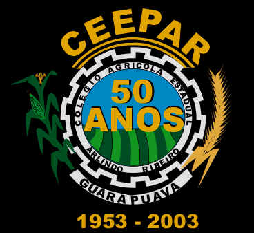

CENTRO ESTADUAL DE
EDUCAÇÃO PROFISSIONAL
ARLINDO RIBEIRO

07 A 12 DE JULHO DE 2003
GUARAPUAVA - PARANÁ
EVENTOS
07 a 12/07 - Exposição de fotos da história do Colégio.
07 a 12/07 - Visitação as dependências do Colégio (agendar previamente).
12/07/03 - Inauguração da galeria dos ex-diretores
12/07/03 - Almoço com ex-alunos no Restaurante Guairacá II, (R$ 10,00, por adesão, confirmar pelo fone: 624-3223 até 09/07/03).
12/07/03 - Baile dos 50 anos do Colégio e 1º Encontro dos Granjeiros CEEPAR
Horário: 22 horas
Local: Pahy Centro de Convenções e Eventos.
Banda: Os Snakes
INGRESSOS ANTECIPADOS A R$ 10,00
1953 - 2003
50 ANOS FORMANDO PROFISSIONAIS
CENTRO ESTADUAL DE EDUCAÇÃO PROFISSIONAL ARLINDO RIBEIRO
RUA MÁRIO VIRMOND S/N CEP 85045-720 GUARAPUAVA - PR
FONE/FAX: ( 0**42) 624-3223
E-MAIL: colegioagricola@almix.com.br